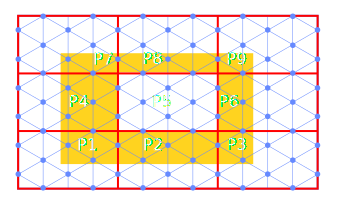

MPI based parallelization
- Reactions on individual domains
- Halo for
- Reactants
- Products
- Energetic clusters

Original plan:
Implement algorithm proposed by Lubachevsky
- Algorithm is developed for Ising spin model
- Each domain keeps track of a local time
- Global time is min(localTimes)
- Updates in a MPI domain is allowed if:
- Local time is smaller than all neighbours
Lubachevsky. 1988. J. Comp. Phys. 75 (1): 103
Algorithm
- Perform spin flip if time is smallest among neighbours
- Select a site and either:
- Perform spin flip
- Perform null event
- Advance local time by a random interval
- Repeat
Time advancement is independent of whether a spin is flipped
Energetics affect the relative probability of null events
Algorithm in Zacros
Same principle:
- If local time < neighbours time:
- Advance local time
- Perform reaction
- Send halo and new local time
- Else:
- Wait to receive halo and time
Issues in Zacros
- Future reactions have a wait time associated with them
- Wait time is random but determined by reaction rates
- Most imminent reaction is performed
- Reaction happen after wait time
- Wait time can differ by several orders of magnitude
Example
Assume that we have 3 MPI nodes in a 1D array
Both \(P_1\) and \(P_3\) are free to perform reactions

Example
Assume that we have 3 MPI nodes in a 1D array
Conflict \(\textrm{P}_1\) should not have performed a reaction

In summary
- Can't change the condition to smallest among \(T_{local} + T_{wait}\)
- The reactions that \(T_{wait}\) on neighbours represent have not happened:
- In fact they may never happen
- Reactions may propagate across domains
Alternative strategies
An alternative proposed by Jefferson
- Each node propagates its reactions without synchronization
- Stores a list of anti reactions to performed reactions
- When a reaction is performed messages are sent to relevant neighbours
Jefferson. 1985. ACM Trans. Program. Lang. Syst. 7 (3): 404
Alternative strategies
- If conflicts arise neighbours will roll-back
- Sending anti messages to their neighbours
- With further potential roll-back
- The "slowest" node determine a virtual time horizon (Global time)
- No roll-backs beyond this the are needed